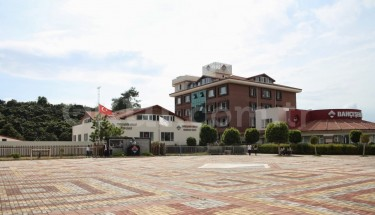
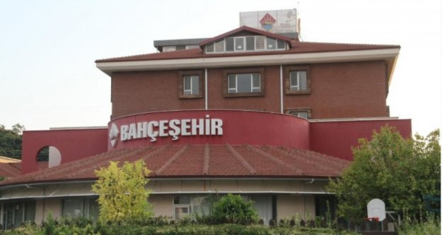

|  |  | |
| Bahçeşehir Okulları öğrencisi olarak vizyonumuzda yer alan yapılandırmacı
yaklaşım sisteminde,öğrenci merkezli eğitim sistemi gerçekleştirilmektedir. Bu sistemden yola çıkarak, öğretmen odaklı geleneksel matbu portfolyalar yerine, bilgisayar teknolojileri kullanarak internet üzerinden gerçekleştirilen öğrenci odaklı webfolyo yani web portfolyo çalışmaları yapılmaktadır. |
||